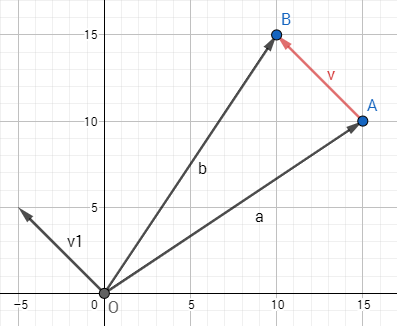
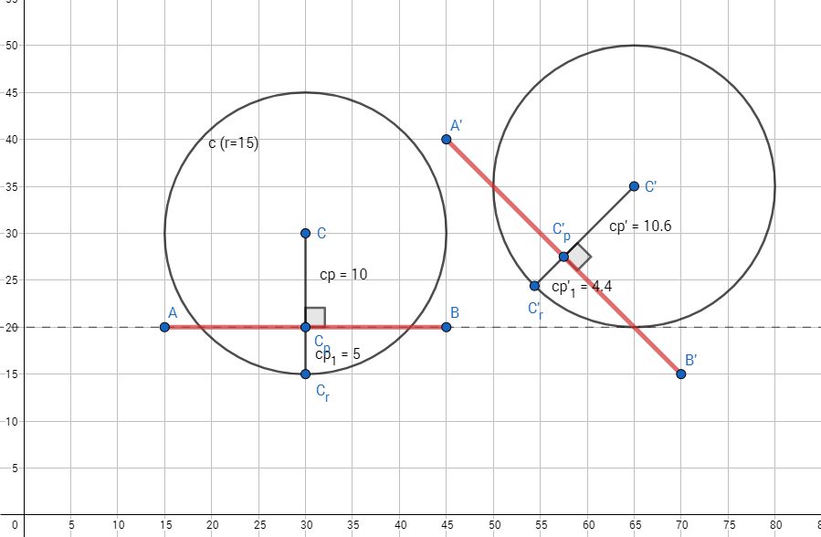
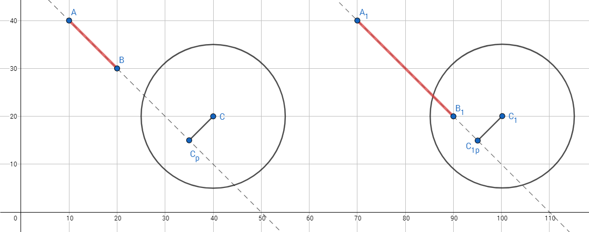
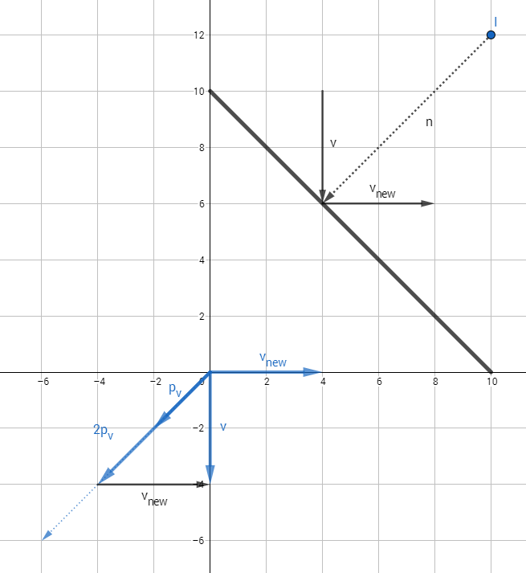
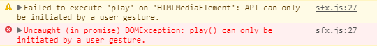

Code Explanation
Working with Canvas and World Dimensions
Position
The game uses the CanvasContext2D's ability to translate its coordinate system to better emulate physics. However, this method effectively introduces a second (transformed) coordinate system. In order to differentiate between coordinate types, the systems have been labeled World Space and Screen Space.
World Space represents the Absolute coordinates of a point.
Screen Space represents the Relative coordinates of a point to the canvas' current top-left point.
For example, if the canvas has been translated by (100,100), the coordinates of the point X = (20,20) in World Space are still Xw = X = (20,20), but in Screen Space, it translates (along with the canvas) to Xs = (120,120).
Objects in the game rely on Absolute coordinates so they can be drawn to the screen correctly. Therefore every position variable represents World Space coordinates. However, Relative coordinates may be used occasionally, when an object needs to position itself according to the boundaries of the canvas (e.g. when the ball initially spawns at the center of the screen).
Size
When the Canvas element is positioned on the HTML page, there are 2 properties that dictate how sizing will behave:
- Object Size Attributes (defined in HTML)
<canvas width="340" height="200"></canvas> - Element Style Attributes (defined in CSS)
canvas {width:340px; height:200px;}
The Canvas object stretches itself to meet the dimensions of its HTML element, the size of which is determined by the CSS Attributes. Changing the CSS Attributes of the Canvas element does not change the actual dimensions of the image on the canvas. Therefore the unit of measurement used in the canvas is not always a pixel. To adress this, the game contains a resizeCanvas() method that is called when the onresize event is fired from the browser. This method changes the Size Attributes of the Canvas object to the dimensions of the browser window. It does not modify any object position on the screen, but since the Android application should be restricted to Portrait mode, it should not be fired more than once and only at the start of the game.
Using Vector Mathematics
The game uses the Victor.js external library to represent the position of game objects and the velocity of the ball. Information about the library specification is available from its website. Victor.js is a 2D vector class which provides operations related to 2D Vector mathematics. Its addition to this project simplifies aspects of it like collision detection and velocity calculations, which are explained in the section below.
Types of vectors
It is important to note, that in geometry there are two types of vectors: free and bound. While both types possess the basic properties of direction and magnitude, bound vectors also have a definite start and end point. Bound vectors are also called Euclidean or geometric vectors. A bound vector in this case can be considered a directed line segment. In contrast, a free vector lacks a start and end point, only being defined by its basic properties. This means that two bound vectors can represent the same free vector if they have equal directions and magnitudes.
Figure 1, below, is an example of the two types of vectors. The red vector v is a bound vector, as it starts from a definite point (A) and ends at a definite point (B). All other vectors are considered free, as they have no definite points, instead starting from the origin. By removing the defining points of v, we can transform it into a free vector, which in this case equals v1.
In algebraic terms, this transformation can by defined by the equation v1 = b-a, where a and b are the free vectors to the start and end point of the bound vector v.

Figure 1: Types of vectors
Victor.js uses free vectors as its basis. However, in order to perform transformations correctly, the game must sometimes use bound vectors. It is important, then, to temporarily transform all bound vectors to free ones for the duration of any calculations.
Collision detection
The game has two objects, which can collide with each other: the ball and the paddle. These objects are represented by two basic shapes - a circle and line respectively. Figure 2 shows two basic examples of the ball colliding with the paddle. By examining them, we can discover, that a valid collision is occurring, if the distance from the centre of the ball to the paddle is less than the radius of the ball. Therefore, r and cp are the variables we need to obtain in order to test for this condition.

Figure 2: Examples of collisions
The diameter of the ball is defined in the Ball object, and therefore the radius is accessible via ball.diameter / 2.
The distance from a the centre to the paddle can be found by constructing a projection of the centre onto the line which the paddle segment is part of. Victor.js defines a method for this:
// Projects a vector onto another vector, setting itself to the result.
Victor.prototype.projectOnto = function(vec2) {...}The position of the paddle, however is a bound vector. So in order to correctly perform the projection, we need to first transform it into a free vector, perform the projection and afterwards translate the result back, in order to preserve its coordinates in 2d space. This is implemented in the paddle.projectionOf(v) method:
// Returns a projection of the vector v onto the paddle's line
Paddle.prototype.projectionOf = function(v){
// clone v and offset by Paddle's start position
// this represents a vector from the Paddle start position to v's coordinates
var vActual = v.clone().subtract(this.pos.start);
// translate the paddle's end position to the origin
// this represents the paddle line going through the (0,0) origin
var endActual = this.pos.end.clone().subtract(this.pos.start);
//get the projection of v
vActual.projectOnto(endActual);
//translate the projection back by the Paddle's start position
vActual.add(this.pos.start);
return vActual;
}Note that since the v parameter is not of a primitive type, it is not copied, but rather passed as a reference. Any changes done to it will modify the original object. To bypass this, we use Victor.js'
clone()method to construct a new vector and perform all modifications on it, rather than the original. The same is true for the paddle'spos.endvector.
After the projection is obtained, the collision test can be performed.
// calculate collision based on the distance from the Ball centre to its projection
var isColliding = proj.distance(this.centre()) <= this.diameter / 2;The projection may at any point lie on the paddle's line, but not on the paddle itself. To account for this situation (shown in Figure 3a), an additional test must be constructed to check whether the projection lies within the bounds of the paddle.

Figure 3a and 3b: A false positive and a false negative
var canCollide = proj.distance(game.paddle.pos.start) + proj.distance(game.paddle.pos.end) <= game.paddle.length();This test considers the ball as a one-dimensional object, since it only accounts for the projection of one point of the ball (the centre). For a more consistent detection, the second test must be amended to detect collisions when the distance from the projection to any end-point of the paddle is less than the radius of the ball (see Figure 3b).
var canCollide = proj.distance(game.paddle.pos.start) + proj.distance(game.paddle.pos.end) - game.paddle.length() <= this.diameter / 2;With these two tests, the game can determine with a sufficient percent of accuracy when the ball and the paddle have collided.
These tests are performed in the
Ball.prototype.checkForCollisions()method (Ball.js, line 144)
Compensating for collisions
While the collision detection is accurate, it only fires once the ball has already collided with the paddle. The ball's position must therefore be corrected so it reverts to the point where its merely touching the paddle. This can be done by positioning the ball centre further along the projection line so that the distance between it and the projection point is equal to the ball's radius. The following code addresses this.
// represents vector from projection to ball centre
var tCentre = this.centre().subtract(proj);
// multiply the translated vector so its magnitude is equal to the Ball's radius
var coeff = (this.diameter / 2) / tCentre.magnitude();
tCentre.multiplyScalar(coeff);
// and translate it back
tCentre.add(proj);
//apply the new position
this.pos = tCentre.subtract(new Victor(this.diameter/2, this.diameter/2));Bouncing the Ball
These calculations are meaningless if the ball continues to travel towards the paddle. In order to make it bounce off when collided, the ball.velocity is reflected off the normal of the paddle. This is achieved by constructing a projection (pv) of the velocity vector v onto the normal vector n, doubling that (2pv), and subtracting it from v: vnew = v - 2* projection(v,n) (see Figure 4). The resulting velocity is finally multiplied by 2*bounceModifier so the ball gains velocity when it bounces and the game continues.

Figure 4: Reflection of velocity
// represents the normal of the game.paddle line
// which in this case is parallel to the vector from the Ball centre to its projection
var normal = proj.subtract(this.centre());
// project the velocity vector onto the normal
var velProj = this.velocity.clone().projectOnto(normal);
// and double
velProj.multiplyScalar(2);
// finally subtract the velocity projection from the actual velocity
// and make sure the final velocity does not decay over time
// by multiplying by 2*bounceModifier
this.velocity.subtract(velProj).multiplyScalar(2*this.bounceModifier)Sound Effects
Originally, the sound effects were implemented via the Audio element. However, this approach has some inherent flaws.
The HTML5 Audio element's behaviour is not consistent on mobile browsers. Different articles report different results, however they all agree on two major flaws that make this approach not suitable for Game development.
Mobile browsers only support playback of one
<audio>element at any time. Due to lack of hardware testing environments, this issue could not be investigated thoroughly. However, when tested using Chrome 62.0 on an Android 7 device, this problem did not appear. Since the game uses two tracks as background music, which are played simultaneously, testing should have revealed only one of these tracks playing. This did not happen during tests and both tracks were audible, with no developer warnings displayed by the console.Audio playback must be initiated by user input. Indeed, when tested in a mobile browser, the bouncing sound effect, which should be played when the ball bounces off a wall or the paddle does not play. Chrome instead delivers the message shown in Figure 5. This is the main issue when implementing this approach. It is important to note that the background music is unaffected by this since it is triggered (albeit indirectly) when either the Start or Replay button is pressed. This, combined with its loop property manages to keep the sound playing throughout the game.

Figure 5: Mobile browser audio error message
The Mozilla Developer Network suggests that the newer Web Audio API does not suffer from the same problems. Howler.js is a third-party library that uses the Web Audio API by default and falls back to HTML5 Audio. It provides a simple way to load and play sound effects and offers features such as sound pools and fading. Sounds in the game are handled through the sfx object. This object extends the functionality of Howler by providing a unique id for every sound and adds singleton sounds. A singleton sound's playback is only started if it is not currently playing. An example of singleton sound is the background music, which gets triggered at every new game initialization.
The sfx object hosts two methods: sfx.load() and sfx.play(). Loading all sounds is done when loading the page, via the game.init() method. All loaded sounds are stored in the sfx.sfxArray object and can be accessed through their respective IDs.
var sfx = {
sfxArray:{},
play: function(id){
var s = sfx.sfxArray[id];
if(s){
// return if the sound is a singleton and is already being played
if(s.singleton == true && s.playing()) return;
sfx.sfxArray[id].play();
}
},
load: function(id, path, volume, loop, singleton){
sfx.sfxArray[id] = new Howl({
src:[path],
volume: volume || 1,
loop: loop || false,
preload: true,
});
if(singleton) sfx.sfxArray[id].singleton = singleton;
}
}References
Math for Game Developers - Vector Reflections
Helped with calculations for velocity reflection